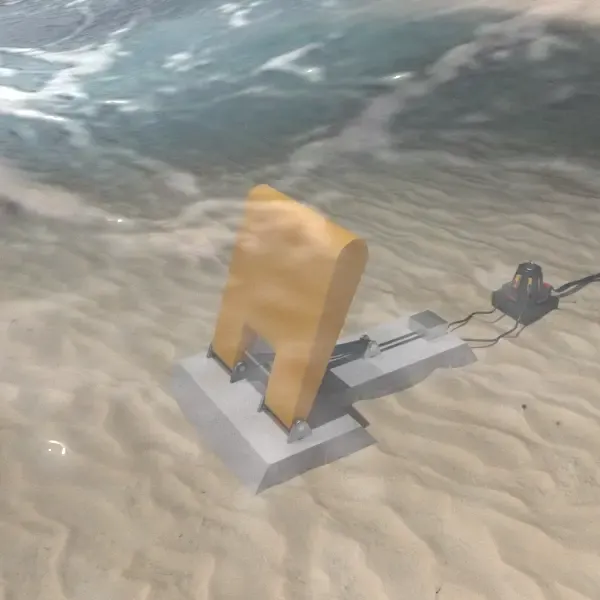
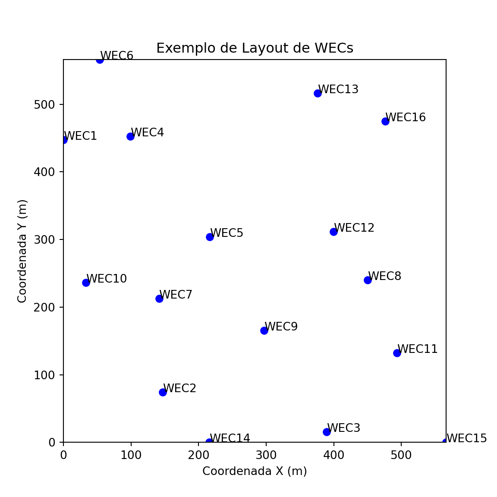
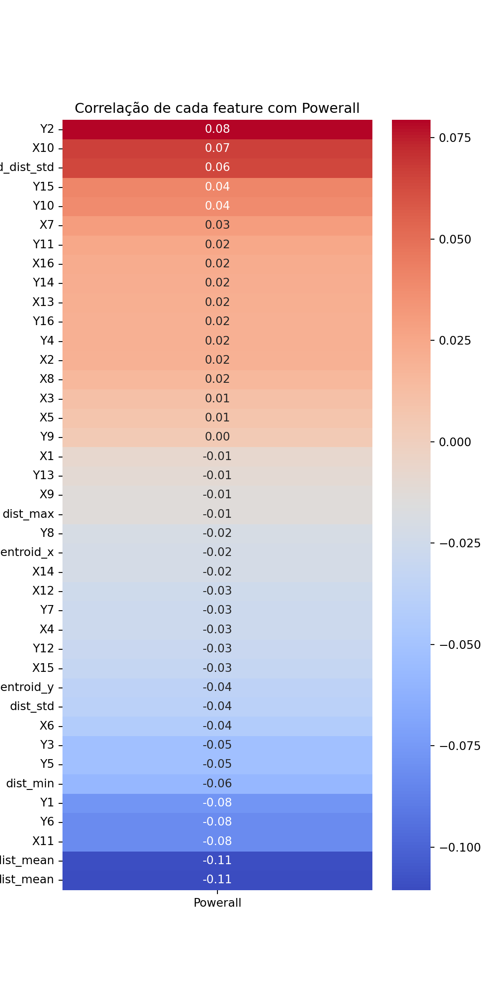

R, Python, Ciência de Dados, Deep Learning, Data Processing
1 Dicionário de Variáveis (Dataset WEC)
As colunas presentes na base de dados bruta e processada são descritas a seguir:
X1 a X16: Coordenadas cartesianas no eixo horizontal (\(X\)) para cada um dos 16 conversores de energia das ondas no arranjo.
Y1 a Y16: Coordenadas cartesianas no eixo vertical (\(Y\)) para cada um dos 16 conversores de energia das ondas no arranjo.
P1 a P16: Potência individual gerada por cada conversor (geralmente removidas após a consolidação para focar na performance do grupo).
Powerall: Variável alvo (target) que representa a potência total líquida gerada pelo arranjo de 16 WECs, considerando as interações hidrodinâmicas.
scenario: Identificador da localização geográfica e condições metereológicas do dataset (ex.: Adelaide, Tasmania, Sydney e Perth).
O dataset abrange quatro localizações reais na costa australiana, cada uma com características distintas de espectro de onda:
Adelaide: Águas mais rasas e regime de ondas regular.
Tasmania: Alta energia e condições climáticas severas.
Sydney: Regime de ondas moderado.
Perth: Influência de ventos consistentes e swells de longo período.
Área de Ocupação: Todas as coordenadas (\(X, Y\)) estão contidas dentro de uma área delimitada de 566m x 566m, definindo o espaço operacional da fazenda de ondas.
Este projeto foca no processamento e engenharia de atributos de um dataset de Conversores de Energia das Ondas (WECs - Wave Energy Converters). O objetivo principal é transformar coordenadas espaciais (\(X, Y\)) em um formato otimizado para modelos de Regressão linear, extraindo métricas geométricas que descrevam a disposição física dos conversores no oceano.
A meta é criar um pipeline de dados para que o algoritmo de regressão consiga prever a eficiência do arranjo para cada cenário geográfico.
2.1 Detalhamento do Contexto e Desafios
2.1.1 O Efeito de Interação Hidrodinâmica
O principal desafio na modelagem de fazendas de ondas (WEC Farms) é o Efeito Wake (Esteira). Assim como em parques eólicos, quando um conversor extrai energia de uma onda, ele cria uma “sombra” ou zona de menor energia atrás de si, alterando o recurso disponível para os conversores vizinhos.
A potência total (\(Powerall\)) é uma soma linear das potências individuais em isolamento, porém o posicionamento dos WECs impacta diretamente a quantidade de energia gerada por WECs adjacentes.
\[Powerall = \sum_{i=1}^{16} P_i\]
2.1.2 Por que a Engenharia de Atributos é Vital para Regressão Linear?
Modelos de Regressão Linear assumem que a variável dependente é uma combinação linear das variáveis independentes. No entanto, as coordenadas puras (\(X, Y\)) raramente têm uma relação linear direta com a potência. Ao extrair métricas como distância ao centroide e distância mínima, estamos:
Capturando Não-Linearidades: A distância euclidiana (que envolve termos quadráticos e raízes) “pré-processa” a geometria para o modelo, permitindo que a regressão linear encontre coeficientes significativos para a dispersão espacial.
Tratando a Invariância Espacial: O modelo passa a entender a relação entre os WECs, em vez de apenas suas posições absolutas no mapa.
3 Pipeline de Processamento e Engenharia de Atributos
3.1 Leitura e Consolidação dos Dados
Leitura dos arquivos CSV brutos para cada cenário (Adelaide, Tasmania, Sydney, Perth).
Atribuição de nomes de colunas e adição de uma coluna scenario para identificar a origem dos dados.
Salvamento em formato .parquet para otimização de leitura e escrita.
Adelaide salvo em C:\Users\Muniz\OneDrive\Documentos\Academico\DL\P1_RL\data\processed\adelaide.parquet
Tasmania salvo em C:\Users\Muniz\OneDrive\Documentos\Academico\DL\P1_RL\data\processed\tasmania.parquet
Sydney salvo em C:\Users\Muniz\OneDrive\Documentos\Academico\DL\P1_RL\data\processed\sydney.parquet
Perth salvo em C:\Users\Muniz\OneDrive\Documentos\Academico\DL\P1_RL\data\processed\perth.parquet
Dataset final salvo em: C:\Users\Muniz\OneDrive\Documentos\Academico\DL\P1_RL\data\processed\wec_all.parquet
print(f"Shape final: {wec_all.shape}")
Shape final: (287999, 50)
3.2 Remoção de Colunas de Potência Individual
A decisão de remover as colunas P1 a P16 foi tomada para evitar que o modelo de regressão linear se torne dependente das potências individuais, que não estarão disponíveis em um cenário de previsão real. O foco é extrair informações geométricas dos WECs, como suas posições relativas, para prever a potência total Powerall.
Evitar a multicolinearidade: As potências individuais estão altamente correlacionadas com a potência total, o que pode levar a problemas de Dataleakage, já que:
\[Powerall = \sum_{i=1}^{16} P_i\]
import pandas as pddf = pd.read_parquet(PROCESSED_DIR /"wec_all.parquet")p_cols = [f"P{i}"for i inrange(1, 17)]df.drop(columns=p_cols, inplace=True)df
X1
X2
X3
X4
X5
X6
X7
X8
X9
X10
X11
X12
X13
X14
X15
X16
Y1
Y2
Y3
Y4
Y5
Y6
Y7
Y8
Y9
Y10
Y11
Y12
Y13
Y14
Y15
Y16
Powerall
scenario
0
316.5855
223.9277
182.3434
551.5497
7.8641
243.1339
361.0877
115.9284
78.6087
468.3799
362.6036
1.6865
508.6837
446.6440
385.7292
522.1661
180.9224
366.9186
200.9217
436.4863
189.6325
218.9722
247.9875
269.9356
495.7867
105.5203
141.8014
18.7857
496.6488
3.2835
513.9628
105.5529
1370374.145
Adelaide
1
530.3136
68.7031
31.5983
175.2582
516.1441
63.4652
67.0954
369.4486
14.0930
375.4462
45.4747
361.9118
297.8632
293.7442
90.5536
3.4209
510.7784
564.9436
324.5823
94.5002
424.1370
400.1397
107.3907
248.7212
415.6457
410.1439
156.3712
532.9900
280.7516
559.2803
208.7441
531.3943
1340929.765
Adelaide
2
27.3967
399.0488
565.6854
394.0466
120.2245
558.1293
546.4520
27.3256
314.1051
235.9476
514.9275
26.3633
332.2882
518.8260
494.6027
514.5393
102.5081
221.2811
303.2901
378.8741
85.5374
90.2488
516.1118
498.6277
435.2397
35.5588
148.9206
48.0585
317.9832
26.8732
483.0186
359.0875
1352031.511
Adelaide
3
346.1526
59.6375
226.2742
280.9095
402.2161
218.7181
207.0407
339.5676
0.0000
0.0000
175.5163
365.7745
565.6854
179.4148
155.1914
565.6854
441.9194
560.6924
0.0000
565.6854
424.9487
429.6600
176.7005
217.2239
562.7245
347.2173
0.0000
272.3906
178.4930
317.5044
235.5983
19.6762
1396754.375
Adelaide
4
317.9144
551.8542
335.4745
40.0240
316.6285
365.6434
416.3060
562.1028
211.3577
143.1255
516.7467
288.3794
54.9749
38.8434
193.8276
138.5265
94.6465
256.6874
434.6103
114.7701
0.0000
143.9788
337.7052
536.6741
143.3888
48.6452
109.5254
377.3113
530.8384
463.1129
42.6895
367.9045
1355708.577
Adelaide
...
...
...
...
...
...
...
...
...
...
...
...
...
...
...
...
...
...
...
...
...
...
...
...
...
...
...
...
...
...
...
...
...
...
...
287994
19.5135
478.6166
148.2143
450.2319
125.6785
70.9718
565.6854
37.7842
544.1133
236.7326
4.1684
61.2334
553.5673
95.4607
66.5839
180.4742
188.5023
531.5100
301.6850
16.3015
440.4696
404.8283
117.5421
12.4275
543.3555
507.7054
565.6854
565.6854
0.0000
527.8173
466.4224
0.0000
1402661.032
Perth
287995
333.6787
455.1773
432.5572
191.2960
556.6596
565.6854
76.3422
474.0408
133.7307
530.5940
512.7716
46.9926
123.3030
545.3711
358.2544
471.9163
490.0271
42.2444
496.7988
451.0021
3.7970
565.6854
96.0607
189.1050
565.6854
162.2300
232.4640
18.7375
487.2516
312.2023
3.5682
280.5183
1371938.375
Perth
287996
439.0799
281.9677
124.0780
403.3259
263.5955
67.5702
469.8106
97.9994
302.2266
210.1420
143.5943
180.8595
515.4032
202.4572
128.4527
78.4730
121.2716
426.1398
118.4704
220.5359
370.3263
364.8957
208.4444
8.0888
60.4651
315.6591
521.4316
424.5841
86.7144
220.0558
434.1959
176.9434
1344431.112
Perth
287997
36.1101
457.2237
359.1680
34.9338
543.2708
565.6854
381.4169
409.9652
73.8620
239.3023
254.4581
50.5293
170.7849
526.3237
507.3541
392.7777
227.0597
18.2085
519.7167
438.9683
0.0000
471.3834
176.9655
512.3731
505.1183
420.2044
194.6653
381.8094
491.8123
420.8932
508.6233
363.9954
1392385.246
Perth
287998
329.7393
498.9516
183.7059
455.2799
0.0000
71.6083
535.8469
16.7191
561.2334
492.7963
565.6854
16.8368
531.6753
109.2759
236.5937
352.1168
549.6675
524.0738
120.1026
71.1857
512.2242
62.4584
287.0139
117.6567
498.6035
233.9149
348.4920
357.7752
29.7426
309.7273
129.8734
207.5354
1385080.145
Perth
287999 rows × 34 columns
3.3 Análise Exploratória e Visualização
Nesta etapa, realizamos uma análise exploratória dos dados para entender a estrutura, identificar valores faltantes e visualizar a disposição dos WECs no plano cartesiano.
import pandas as pdpd.set_option('display.max_columns', None)print(df.shape, "\n")
O dataset consolidado contém 287.999 linhas e 49 colunas, sem valores faltantes.
A maior parte das colunas de coordenadas (X1 a Y16) tem uma moda de 0 ou 566, indicando que muitos WECs estão posicionados em coordenadas próximas ou idênticas, o que pode sugerir agrupamentos ou padrões de arranjo específicos.
3.4 Visualização da Disposição dos WECs
3.4.1 O que é um WEC?
WECs (Wave Energy Converters) são dispositivos projetados para converter a energia das ondas em eletricidade. Eles podem assumir diferentes formatos, como:
Bóias flutuantes: Capturam energia a partir do movimento vertical das ondas.
Colunas oscilantes: Estruturas fixas ou semi-flutuantes que se movem com a pressão ou deslocamento da água.
Plataformas flutuantes: Sistemas maiores, capazes de gerar mais energia em conjunto.
A posição de cada WEC dentro de uma fazenda de ondas é crucial, pois o arranjo influencia diretamente a eficiência energética. Certos padrões podem minimizar interferências hidrodinâmicas e maximizar a captura de energia de cada dispositivo.

Abaixo, apresentamos uma visualização do layout de uma fazenda de WECs, mostrando diferentes formas de posicionamento. Essa visualização ajuda a compreender como a distribuição espacial afeta a eficiência global:
import matplotlib.pyplot as pltimport numpy as nprandom_idx = np.random.randint(0, len(df))x_values = df[[f"X{i}"for i inrange(1, 17)]].iloc[random_idx].valuesy_values = df[[f"Y{i}"for i inrange(1, 17)]].iloc[random_idx].valuesplt.figure(figsize=(6,6))plt.scatter(x_values, y_values, color='blue')for i inrange(16): plt.text(x_values[i], y_values[i], f"WEC{i+1}")plt.xlim(0, 566)
(0.0, 566.0)
plt.ylim(0, 566)
(0.0, 566.0)
plt.gca().set_aspect('equal')plt.title("Exemplo de Layout de WECs")plt.xlabel("Coordenada X (m)")plt.ylabel("Coordenada Y (m)")plt.show()

3.5 Ganhos e insights possíveis com diferentes arranjos:
Disposição regular: Reduz interferências entre WECs, facilita manutenção e controle.
Disposição escalonada ou hexagonal: Aumenta a densidade de energia capturada e reduz sombras hidrodinâmicas.
Arranjos adaptativos: Baseados em modelagem computacional ou simulação de ondas para maximizar a eficiência energética.
4 Criação de Novas Features
Nesta etapa, calculamos métricas geométricas a partir das coordenadas dos WECs para capturar a disposição espacial e as interações hidrodinâmicas:
Distâncias Mínimas entre WECs: Calcula as distâncias entre
Distância ao Centroide: Calcula a distância de cada WEC ao centroide do arranjo, fornecendo uma medida de dispersão espacial.
4.1 Distância Euclidiana entre WECs
4.1.1 O que é?
A distância euclidiana é a maneira mais direta de medir a separação entre dois pontos em um plano 2D. No contexto das fazendas de Wave Energy Converters (WECs), ela nos permite quantificar o espaço físico entre cada par de dispositivos, que é essencial para analisar interferências hidrodinâmicas e eficiência energética.
4.1.2 Fórmula Matemática
Para dois pontos \((i\)) e \((j)\) com coordenadas \((X_i, Y_i)\) e \((X_j, Y_j)\), a distância euclidiana é calculada como:
\((d_{ij})\) é a distância direta “linha reta” entre o WEC \((i)\) e o WEC \((j)\).
4.1.3 Como o código escolhe os pontos?
Seleção dos pontos: Cada linha do dataframe representa uma configuração da fazenda de WECs. Para essa linha, o código cria uma lista de tuplas de coordenadas:
Proximidade crítica entre WECs (evitar interferência hidrodinâmica).
Uniformidade do layout (distribuição regular ou concentrada).
Potencial de eficiência energética baseado na posição relativa dos dispositivos.
4.1.5 Por que é importante?
Evitar interferências entre WECs: Dispositivos muito próximos podem “sombrear” uns aos outros, reduzindo a eficiência da captura de energia.
Caracterizar o layout da fazenda: A distância média e o desvio padrão ajudam a identificar padrões espaciais, como agrupamentos ou dispersão uniforme.
Fornecer features para modelos de predição: Estatísticas das distâncias podem ser usadas como entradas em modelos de regressão ou machine learning, ajudando a prever a potência total gerada (Powerall).
4.1.6 Visualização Intuitiva
Se representarmos cada WEC como um ponto em um plano 2D, a distância euclidiana é a linha reta que conecta dois pontos, sem se importar com o caminho das ondas ou obstáculos. Para todos os pares, podemos pensar em uma “rede de linhas” conectando cada dispositivo a todos os outros.
import pandas as pdimport numpy as npfrom itertools import combinationsn_wecs =16x_cols = [f"X{i}"for i inrange(1, n_wecs+1)]y_cols = [f"Y{i}"for i inrange(1, n_wecs+1)]def euclidean_distance(x1, y1, x2, y2):return np.sqrt((x1 - x2)**2+ (y1 - y2)**2)def pairwise_distances(row): coords = [(row[x_cols[i]], row[y_cols[i]]) for i inrange(n_wecs)] dists = [euclidean_distance(x1, y1, x2, y2) for (x1, y1), (x2, y2) in combinations(coords, 2)]return distsdf['pairwise_distances'] = df.apply(pairwise_distances, axis=1)df['dist_mean'] = df['pairwise_distances'].apply(np.mean)df['dist_min'] = df['pairwise_distances'].apply(np.min)df['dist_max'] = df['pairwise_distances'].apply(np.max)df['dist_std'] = df['pairwise_distances'].apply(np.std)print(df[['dist_mean','dist_min','dist_max','dist_std']].head())
O centroide é o ponto médio de todos os WECs em uma fazenda, ou seja, o “coração geométrico” da configuração. Se temos \((N)\) WECs com coordenadas \((X_i, Y_i)\), o centroide é calculado como:
A matriz de correlação é uma ferramenta estatística que mostra a relação linear entre cada par de variáveis em um dataset. No contexto do nosso projeto, ela nos ajuda a entender como as novas features geométricas (como dist_mean, dist_min, centroid_dist_mean, etc.) estão relacionadas com a variável alvo Powerall. Foi utilizado ” ” porque não é uma matriz de correlação tradicional entre todas as variáveis, mas sim um gráfico de calor focado na correlação de cada feature com Powerall, já que a base de dados possui muitas colunas, e o objetivo é destacar a correlação de cada feature com a variável alvo.
import matplotlib.pyplot as pltimport seaborn as sns# Seleciona apenas as colunas numéricasdf_numeric = df.select_dtypes(include=[np.number])# Calcula a correlação com PowerAllcorr_with_target = df_numeric.corr()['Powerall'].drop('Powerall') # remove a correlação consigo mesmo# Converte para DataFrame para usar no heatmapcorr_df = corr_with_target.to_frame().sort_values(by='Powerall', ascending=False)plt.figure(figsize=(6, len(corr_df)*0.3)) # ajusta altura dinamicamentesns.heatmap(corr_df, annot=True, fmt=".2f", cmap="coolwarm", cbar=True)plt.title("Correlação de cada feature com Powerall")plt.show()

4.3.1 Interpretação Geral
A baixa magnitude das correlações reforça que a relação entre layout dos WECs e potência total é complexa e não-linear, justificando a necessidade de:
Features derivadas (distâncias entre pares, distâncias ao centroide, métricas estatísticas).
Modelos mais sofisticados que capturem interações e efeitos não-lineares, como regressão polinomial ou modelos baseados em árvores.
Em resumo, nenhuma feature isolada tem poder explicativo forte, mas a combinação de várias métricas espaciais pode fornecer insights importantes para previsão de Powerall.
5 Exportação da Base de Dados Tratada
Novas Features Criadas para melhor desempenho do Modelo
Salvamento em formato .parquet para otimização de leitura e escrita.
![]()